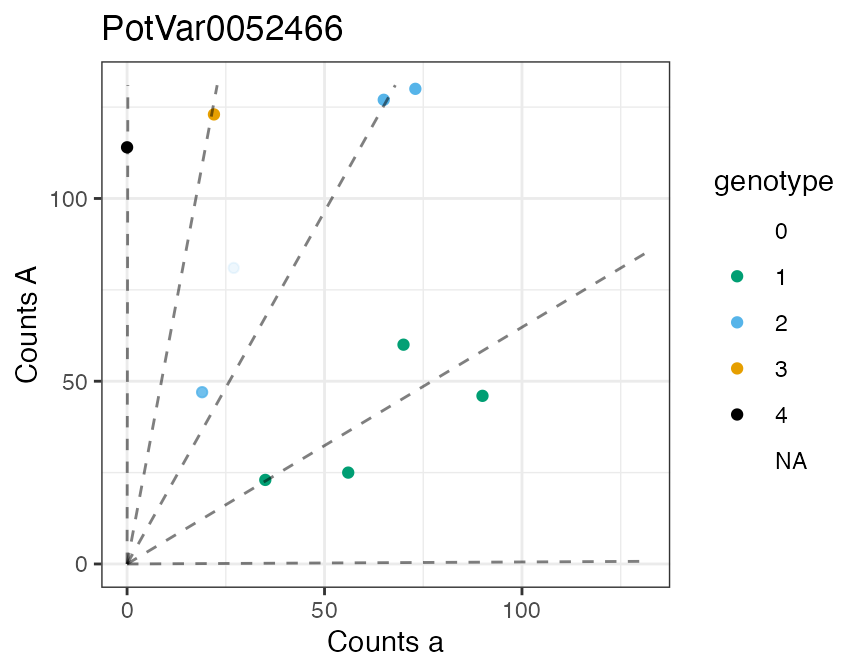

Abstract
multidog() provides support for genotyping many SNPs by iterating flexdog() over the SNPs. Support is provided for parallel computing through the future package. The genotyping method is described in Gerard et al. (2018) and Gerard and Ferrão (2020).
Fit multidog()
Let’s load updog, future, and the data from Uitdewilligen et al. (2013).
uitdewilligen$refmat is a matrix of reference counts while uitdewilligen$sizemat is a matrix of total read counts. In these data, the rows index the individuals and the columns index the loci. But for insertion into multidog() we need it the other way around (individuals in the columns and loci in the rows). So we will transpose these matrices.
refmat <- t(uitdewilligen$refmat)
sizemat <- t(uitdewilligen$sizemat)
ploidy <- uitdewilligen$ploidysizemat and refmat should have the same row and column names. These names identify the loci and the individuals.
setdiff(colnames(sizemat), colnames(refmat))
#> character(0)
setdiff(rownames(sizemat), rownames(refmat))
#> character(0)If we want to do parallel computing, we should check that we have the proper number of cores:
future::availableCores()
#> system
#> 16Now let’s run multidog():
mout <- multidog(refmat = refmat,
sizemat = sizemat,
ploidy = ploidy,
model = "norm",
nc = 2)
#> | *.#,%
#> ||| *******/
#> ||||||| (**..#**. */ **/
#> ||||||||| */****************************/*%
#> ||| &****..,*.************************/
#> ||| (....,,,*,...****%********/(******
#> ||| ,,****%////,,,,./.****/
#> ||| /**// .*///....
#> ||| .*/*/%# .,/ .,
#> ||| , **/ #% .* ..
#> ||| ,,,*
#>
#> Working on it...done!By default, parallelization is run using
future::plan(future::multisession, workers = nc)if nc is greater than 1. You can choose your own evaluation strategy by running future::plan() prior to running multidog(), and then setting nc = NA. This should be particularly useful in higher performance computing environments that use schedulers, where you can control the evaluation strategy through the future.batchtools package. For example, the following will run multidog() using forked R processes:
future::plan(future::multicore, workers = 2)
mout <- multidog(refmat = refmat,
sizemat = sizemat,
ploidy = ploidy,
model = "norm",
nc = NA)
## Shut down parallel workers
future::plan(future::sequential)
multidog() Output
There is a plot method for the output of multidog().

#>
#> [[2]]
#>
#> [[3]]
The output of multidog contains two data frame. The first contains properties of the SNPs, such as estimated allele bias and estimated sequencing error rate.
str(mout$snpdf)
#> 'data.frame': 100 obs. of 20 variables:
#> $ snp : chr "PotVar0089524" "PotVar0052647" "PotVar0120897" "PotVar0066020" ...
#> $ bias : num 0.519 1.026 0.929 1.221 0.847 ...
#> $ seq : num 0.00485 0.00221 0.002 0.0039 0.00206 ...
#> $ od : num 0.00304 0.00295 0.00337 0.00275 0.00335 ...
#> $ prop_mis: num 0.004926 0.002274 0.000626 0.002718 0.003 ...
#> $ num_iter: num 6 3 3 5 7 7 4 8 8 4 ...
#> $ llike : num -14.7 -25.3 -10.4 -22.7 -32 ...
#> $ ploidy : num 4 4 4 4 4 4 4 4 4 4 ...
#> $ model : chr "norm" "norm" "norm" "norm" ...
#> $ p1ref : num NA NA NA NA NA NA NA NA NA NA ...
#> $ p1size : num NA NA NA NA NA NA NA NA NA NA ...
#> $ p2ref : num NA NA NA NA NA NA NA NA NA NA ...
#> $ p2size : num NA NA NA NA NA NA NA NA NA NA ...
#> $ Pr_0 : num 0.000279 0.248211 0.66369 0.015803 0.08409 ...
#> $ Pr_1 : num 0.00707 0.45067 0.26892 0.06938 0.20154 ...
#> $ Pr_2 : num 0.0745 0.2542 0.0597 0.1931 0.2968 ...
#> $ Pr_3 : num 0.32604 0.04452 0.00725 0.34069 0.26844 ...
#> $ Pr_4 : num 0.592065 0.002423 0.000482 0.381024 0.149179 ...
#> $ mu : num 4.18 1.01 -1 3.75 2.29 ...
#> $ sigma : num 1.067 0.925 1.289 1.481 1.433 ...The second data frame contains properties of each individual at each SNP, such as the estimated genotypes (geno) and the posterior probability of being genotyping correctly (maxpostprob).
str(mout$inddf)
#> 'data.frame': 1000 obs. of 17 variables:
#> $ snp : chr "PotVar0089524" "PotVar0089524" "PotVar0089524" "PotVar0089524" ...
#> $ ind : chr "P5PEM08" "P3PEM05" "P2PEM10" "P7PEM09" ...
#> $ ref : num 122 113 86 80 69 85 130 228 60 211 ...
#> $ size : num 142 143 96 80 69 86 130 228 86 212 ...
#> $ geno : num 3 3 3 4 4 4 4 4 2 4 ...
#> $ postmean : num 3 2.99 3 4 4 ...
#> $ maxpostprob: num 1 0.988 1 1 1 ...
#> $ Pr_0 : num 3.74e-90 1.03e-78 2.21e-77 1.06e-86 8.21e-79 ...
#> $ Pr_1 : num 7.97e-23 3.86e-16 2.61e-20 6.80e-30 1.21e-26 ...
#> $ Pr_2 : num 4.94e-06 1.17e-02 3.27e-06 2.82e-14 1.01e-12 ...
#> $ Pr_3 : num 1.00 9.88e-01 1.00 6.74e-06 2.75e-05 ...
#> $ Pr_4 : num 1.45e-10 1.14e-15 3.56e-06 1.00 1.00 ...
#> $ logL_0 : num -201 -176 -172 -190 -172 ...
#> $ logL_1 : num -49.6 -35.6 -44 -62.9 -55.4 ...
#> $ logL_2 : num -13.27 -6.95 -13.93 -29.29 -25.69 ...
#> $ logL_3 : num -2.55 -4 -2.79 -11.49 -10.06 ...
#> $ logL_4 : num -25.804 -38.999 -15.935 -0.181 -0.158 ...You can obtain the columns in inddf in matrix form with format_multidog().
genomat <- format_multidog(mout, varname = "geno")
head(genomat)
#> P1PEM10 P2PEM05 P2PEM10 P3PEM05 P4PEM01 P4PEM09 P5PEM04 P5PEM08
#> PotVar0089524 4 4 3 3 4 4 4 3
#> PotVar0052647 3 1 0 1 1 2 0 1
#> PotVar0120897 0 0 0 0 0 0 0 1
#> PotVar0066020 3 2 3 4 4 3 1 4
#> PotVar0003381 3 1 2 0 2 3 3 1
#> PotVar0131622 2 4 1 2 2 3 4 3
#> P6PEM11 P7PEM09
#> PotVar0089524 2 4
#> PotVar0052647 1 1
#> PotVar0120897 2 1
#> PotVar0066020 4 2
#> PotVar0003381 4 3
#> PotVar0131622 3 3To filter SNPs based on quality metrics (bias, sequencing error rate, overdispersion, etc), you can use filter_snp(), which uses the same non-standard evaluation you are used to from dplyr::filter(). That is, you can define predicates in terms of the variable names in the snpdf data frame from the output of mupdog(). It then keeps rows in both snpdf and inddf where the predicate for a SNP evaluates to TRUE.
References
Gerard, David, and Luís Felipe Ventorim Ferrão. “Priors for genotyping polyploids.” Bioinformatics 36, no. 6 (2020): 1795-1800. https://doi.org/10.1093/bioinformatics/btz852.
Gerard, David, Luís Felipe Ventorim Ferrão, Antonio Augusto Franco Garcia, and Matthew Stephens. 2018. “Genotyping Polyploids from Messy Sequencing Data.” Genetics 210 (3). Genetics: 789–807. https://doi.org/10.1534/genetics.118.301468.
Uitdewilligen, Anne-Marie A. AND D’hoop, Jan G. A. M. L. AND Wolters. 2013. “A Next-Generation Sequencing Method for Genotyping-by-Sequencing of Highly Heterozygous Autotetraploid Potato.” PLOS ONE 8 (5). Public Library of Science: 1–14. https://doi.org/10.1371/journal.pone.0062355.